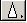

Обработка изображений с помощью CorelDraw и Adobe PhotoShop
Adobe Photoshop
С помощью программы Adobe Photoshop можно открывать и редактировать различные типы цифровых изображений. К ним относятся не только изображения, созданные программой Photoshop, но и изображения, созданные другими приложениями, а также фотографии, полученные сканированием.
Инструменты
- Прямоугольная область. Выделяет прямоугольные области. Для получения квадратной области при её выделении удерживайте клавишу Shift.
- Эллиптическая область. Выделяет эллиптические области. Для выделения
- Лассо. Выделяет области произвольной формы
 -Магнитное лассо. При его использовании граница выделенной
области проходит по пикселям с одинаковым цветовым значением.
-Магнитное лассо. При его использовании граница выделенной
области проходит по пикселям с одинаковым цветовым значением.
-Волшебная палочка. Выделяет фрагменты изображения на основе сходства цветов смежных пикселей, при этом очертание границ выделенных областей выполняется автоматически.
-Кадрирование. Вырезает из изображения выделенную область, при этом ненужные фрагменты отсекаются.
-Перемещение. Перемещает выделенную область изображения.
- Кисть.Используется для наложения мягких цветовых мазков. Размер кисти, режим рисования, цвет и мутность можно изменять. Также можно установить влажное лезвие.
-Карандаш. Позволяет создавать произвольные линии с жёсткими границами. Размер кисти, режим рисования, цвет и мутность можно изменять. Можно установить режим Авто стирание.
- Стиратель. Используется для удаления оригинальных пикселов изображения путём закрашивания их выбранным цветом. Размер кисти, режим удаления, размытость ластика можно изменять. Также можно установить Влажные углы.
 - Стиратель фона. Используется для удаления оригинальных
пикселов изображения путём стирания до фоновой сетки. Можно также выполнять различные настройки
инструмента.
- Стиратель фона. Используется для удаления оригинальных
пикселов изображения путём стирания до фоновой сетки. Можно также выполнять различные настройки
инструмента.
 - Клонирование штампа. Позволяет воспроизводить точные
или модифицированные копии элементов изображения в том же изображении либо в другом документе.
- Клонирование штампа. Позволяет воспроизводить точные
или модифицированные копии элементов изображения в том же изображении либо в другом документе.
- Штамп. Позволяет воспроизводить копии цветовых образцов в том же изображении, либо в другом документе. Можно выбирать различные модели цветовых образцов.
- Градиент. Заполняет область постепенным переходом от одного цвета к другому. Можно изменить тип градиента, режим смешивания, непрозрачность и др.
- Ведро. Позволяет закрашивать однородные пиксели выделенной области изображения выбранным цветом. В зависимости от изменения чувствительности инструмент будет работать по-разному.
- Размытие. Позволяет смягчать слишком резкие границы или области в изображении, уменьшая контраст между пикселями.
 - Резкость. Позволяет повышать чёткость изображения, делая слишком мягкие границы более резкими. Можно изменять давление мазка, диаметр кисти и режим эффекта.
- Палец. Создает на изображении эффект ” Размазывание пальцем”. Размер пальца, режим эффекта и давление мазка можно изменять.
- Осветление. Позволяет осветлять отдельные области изображения. Можно выбрать шкалу градаций посветлее
-Затемнение. Затемняет отдельные области изображения. Настройки этого инструмента идентичны настройкам инструмента Осветление.
- Губка. Изменяет насыщенность отдельных частей изображения. Можно изменять режим губки, диаметр и давление мазка.
- Текст. Позволяет создавать битовый текст. Для текста можно выполнять различные настройки: установить разряд шрифта, стиль шрифта, размер шрифта, метод сглаживания, выравнивание текста, цвет шрифта, создать искажённый текст. Также можно посмотреть палитру символов и абзацев.
 - Прямоугольник. Используется для создания прямоугольной формы произвольного размера. Можно
выполнить различные настройки и для каждого инструмента этой группы они будут свои.
- Прямоугольник. Используется для создания прямоугольной формы произвольного размера. Можно
выполнить различные настройки и для каждого инструмента этой группы они будут свои.
 - Скруглённый прямоугольник. Используется для создания скруглённой прямоугольной формы
произвольного размера.
- Скруглённый прямоугольник. Используется для создания скруглённой прямоугольной формы
произвольного размера.
- Эллипс. Используется для создания эллиптической формы произвольного размера.
- Полигон. Используется для создания полигональной формы произвольного размера.
- Линия. Используется для создания прямых линий произвольной длины.
- Рука. Позволяет просматривать части изображения, которые не поместились на экране. В палитре Навигатор перемещающаяся красная рамка показывает, какая часть изображения в данный момент видна на экране. В этом окне можно изменять формат изображения.
- Лупа. Увеличивает и уменьшает изображение. С помощью палитры Навигатор можно также изменять масштаб изображения.
CorelDraw
Инструменты
-Указатель - прежде чем модифицировать (т.е. переместить, скопировать, удалить или отредактировать) любой объект, его необходимо выделить с помощью выделяющего инструмента.
- Форма (Shape) (F 10) – инструмент, предающий определенную форму объекту.
- Нож (Knife - лезвие) - инструмент вырезания, позволяет разрезать объекты и контуры объектов.
- Ластик (Eraser) (X) – Он предназначен для модификации формы объектов достаточно сложным образом, имитирующим стирание части построенного объекта.
 - Свободное преобразование (Free Transform) позволяет поворачивать объекты вокруг заданной точки.
- Свободное преобразование (Free Transform) позволяет поворачивать объекты вокруг заданной точки.
- Масштаб (Zoom) позволяет увеличивать и уменьшать масштаб отображения несколькими способами. После выбора этого инструмента указатель мыши принимает форму миниатюрной лупы, в середине которой изображен знак «плюс», по умолчанию инструмент настроен на увеличение масштаба отображения.
- Прокрутка (Pan) или Ручной инструмент (H) Прокруткой называется перемещение рисунка в окне документа. Конечно, в Corel DRAW реализован стандартный для интерфейса Windows метод прокрутки с помощью полос прокрутки – горизонтальной и вертикальной, но также имеется и специальный инструмент для выполнения этого действия.
 - Свободная рука (Freehand) преобразует траекторию перемещения мыши в кривую. При этом узлы и
сегменты линии формируются автоматически в соответствии с параметрами настройки инструмента
Свободная рука (Freehand), менять которые без особой нужды не следует. Как впрочем, не следует ждать очень
хороших результатов от применения этого инструмента. Дело в том, что рисовать мышью – совсем не то, что рисовать карандашом или
шариковой ручкой, и даже самому опытному рисовальщику таким образом шедевра не создать.
- Свободная рука (Freehand) преобразует траекторию перемещения мыши в кривую. При этом узлы и
сегменты линии формируются автоматически в соответствии с параметрами настройки инструмента
Свободная рука (Freehand), менять которые без особой нужды не следует. Как впрочем, не следует ждать очень
хороших результатов от применения этого инструмента. Дело в том, что рисовать мышью – совсем не то, что рисовать карандашом или
шариковой ручкой, и даже самому опытному рисовальщику таким образом шедевра не создать.